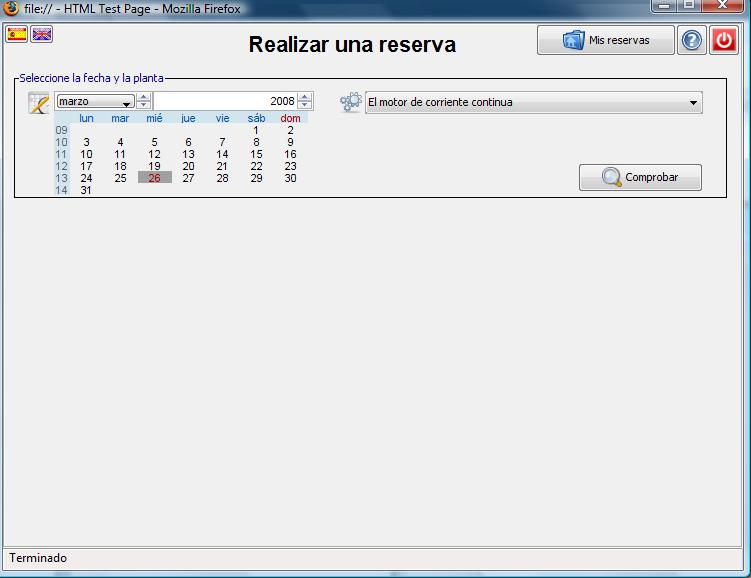
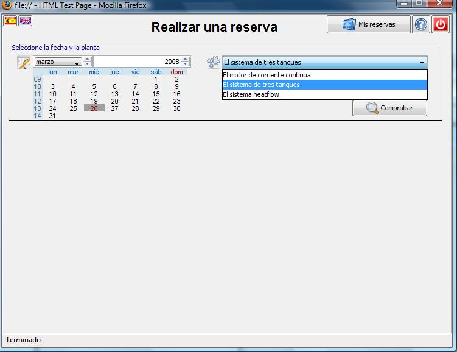
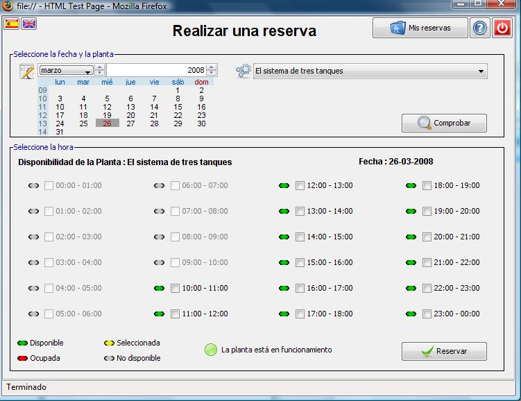
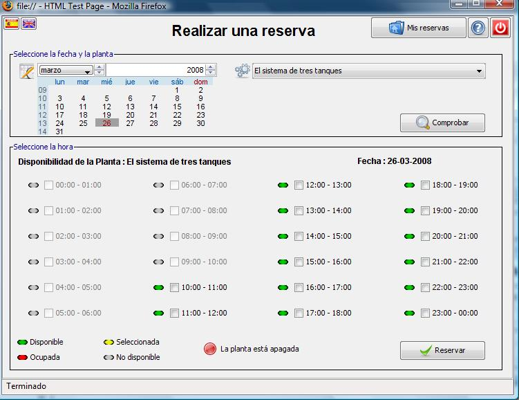
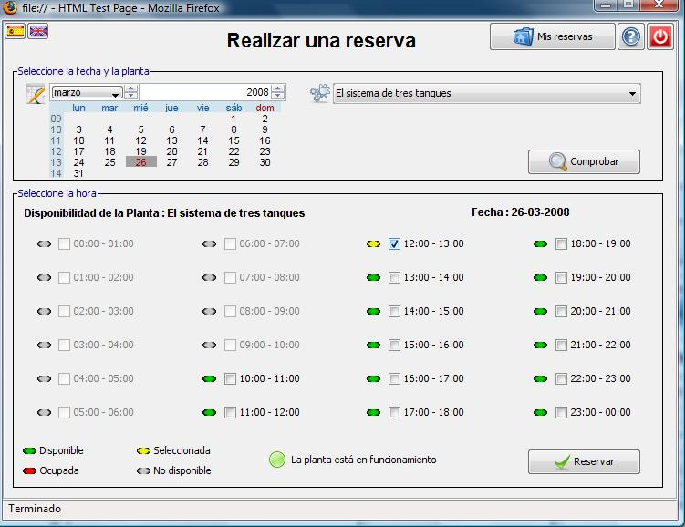
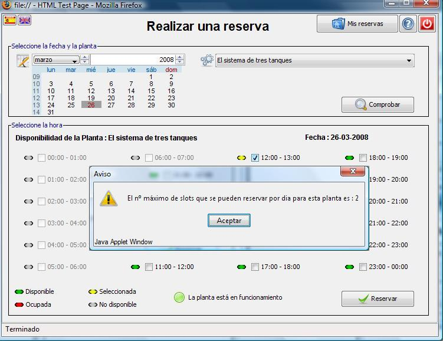
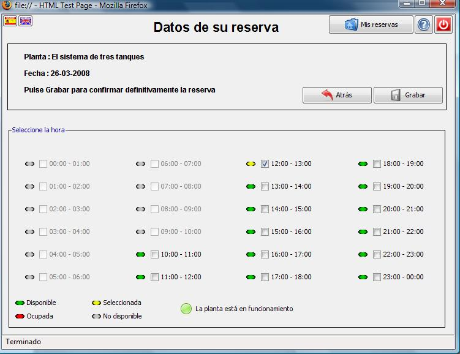
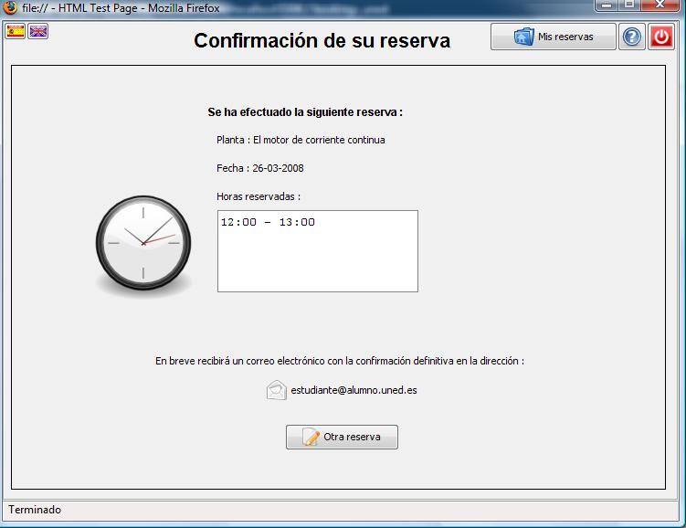
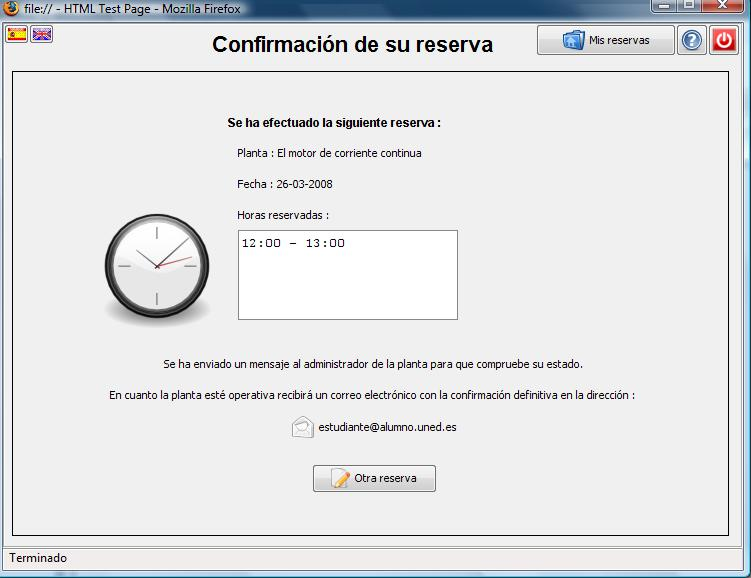

Reservas de Laboratorio
Realizar una reserva
La primera pantalla que aparece una vez que ha accedido a la aplicación es la siguiente:

En la parte superior izquierda están los botones para seleccionar el idioma de la interfaz.
En la parte superior derecha tiene un botón para consultar y borrar reservas realizadas, mostrar esta ayuda y desconectar la aplicación.
Para hacer una reserva debe seleccionar la fecha en el calendario que se le muestra y seleccionar una de las plantas que tiene disponibles en el desplegable. A continuación pulse en el botón Comprobar.

Una vez ha seleccionado la fecha, la planta y ha pulsado el botón para comprobar la disponibilidad le aparecerá la siguiente pantalla:

La aplicación le muestra las horas para el día seleccionado y su disponibilidad.
· Las horas en color gris indican que no están disponibles por ser anteriores a la hora en que está haciendo la reserva.
· El color verde significa que esa franja horaria está disponible.
· El rojo le informa de que esa hora ya ha sido ocupada por otro alumno.
· La hora cambia a color amarillo cuando usted selecciona esa hora, y vuelve a color verde cuando la desmarca.
También se le muestra el estado de la planta indicando si en este momento está operativa o no se encuentra disponible:
Si la planta aparece como apagada puede igualmente hacer la reserva. En este caso la aplicación informará al administrador de la planta para que compruebe su estado.
A continuación debe seleccionar la hora del experimento, para ello marque la hora disponible que desea reservar y pulse en el botón Reservar.

Cada alumno tiene asignado un máximo de reservas por planta, por semana y por día. Si ha superado alguno de esos límites marcando demasiadas horas recibirá una advertencia y no podrá continuar con el proceso de reserva hasta que sus solicitudes se ajusten a los límites permitidos. Póngase en contacto con su profesor para conocer los límites asignados a cada planta.

Una vez pulsado el botón Reservar se le muestra la siguiente pantalla, si está conforme con las horas seleccionadas pulse en el botón Grabar.
Si desea añadir/eliminar franjas horarias pulse sobre ellas.
Si no desea continuar con esta reserva pulse en el botón Atrás.

Una vez pulsado el botón Grabar se le muestra la siguiente pantalla de confirmación :

En ella aparece la planta y las horas seleccionadas, también se le informa de que se le enviará una confirmación definitiva de la reserva a su dirección de correo electrónico.
Si en el momento de hacer la reserva la planta no estaba disponible la pantalla de confirmación tendrá el siguiente aspecto:
r
Se le muestra también la planta y horas seleccionadas en la reserva. Se le informa de que se ha avisado al administrador de la planta para que compruebe por qué no está en funcionamiento. Cuando la planta vuelva a estar operativa la aplicación de reservas le informará por correo electrónico de que su reserva ha sido grabada definitivamente.
Si desea hacer más reservas pulse en el botón Otra reserva.
Si quiere ver su lista de reservas o borrar alguna de ellas pulse en el botón Mis reservas.